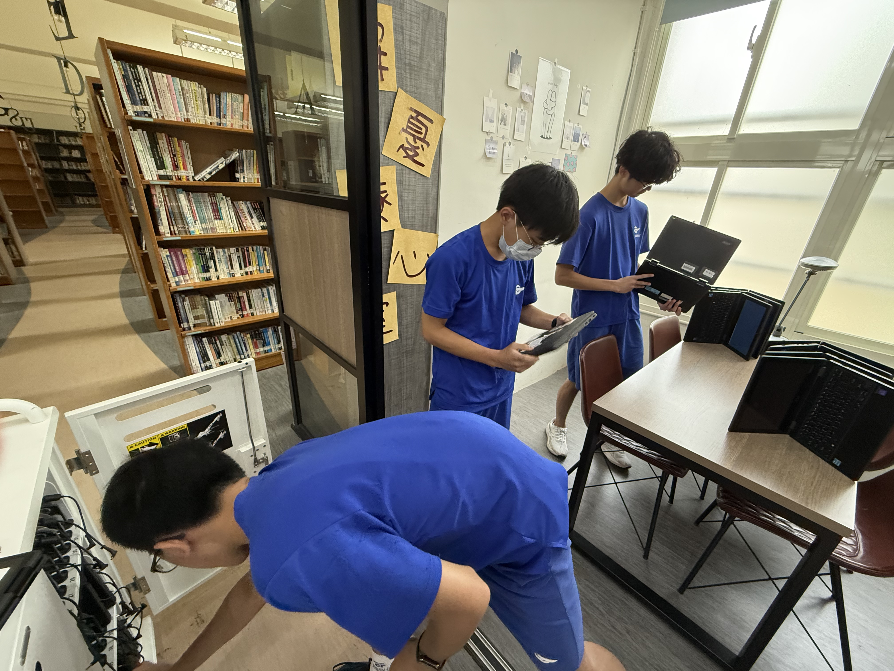

Final Thoughts
寫在學期末：第27屆幹部群的心得與回顧
「這一年來，看著學弟妹從連 IDE 都不會安裝，到現在能夠獨立寫出自己的網頁和解題，這種成就感是無法言喻的。接下社長這個位置壓力很大，但也學到了很多領導與溝通的技巧。感謝所有幹部的Carry！」
楊弘頡
社長「準備社課教材的過程真的很爆肝，常常為了一個 bug 弄到半夜。但每次在台上看到大家恍然大悟的表情，就覺得一切都值得了。希望資訊社能越來越好，大家都能在這裡找到寫程式的樂趣！」
探索程式碼的無限可能，從這裡開始你的科技之旅。我們致力於推廣資訊科學，培養邏輯思維與實作能力。
大直高中資訊社 第27屆 核心幹部群
社長
副社長
教學
公關
指導老師
文書
社團活動紀錄，請使用下方搜尋列依「日期」或「關鍵字」尋找
找不到符合條件的紀錄喔！
社團服務獨立呈現，使用三張實際服務照片記錄當天情況。

幫助校內圖書館整理筆電，確保每一台電腦都能正常運行，大幅減少校內老師的麻煩。
以下為資料夾內的幹部與指導老師照片，已匯入到頁面中。
社團負責外部聯繫與宣傳企劃。
負責資料整理與會議記錄。
社團整體運作的領導與規劃。
協助社長執行社團事務。
管理社團經費與資源。
負責社團課程與技術傳授。
提供社團專業指導與支援。
寫在學期末：第27屆幹部群的心得與回顧
「這一年來，看著學弟妹從連 IDE 都不會安裝，到現在能夠獨立寫出自己的網頁和解題，這種成就感是無法言喻的。接下社長這個位置壓力很大，但也學到了很多領導與溝通的技巧。感謝所有幹部的Carry！」
「準備社課教材的過程真的很爆肝，常常為了一個 bug 弄到半夜。但每次在台上看到大家恍然大悟的表情，就覺得一切都值得了。希望資訊社能越來越好，大家都能在這裡找到寫程式的樂趣！」